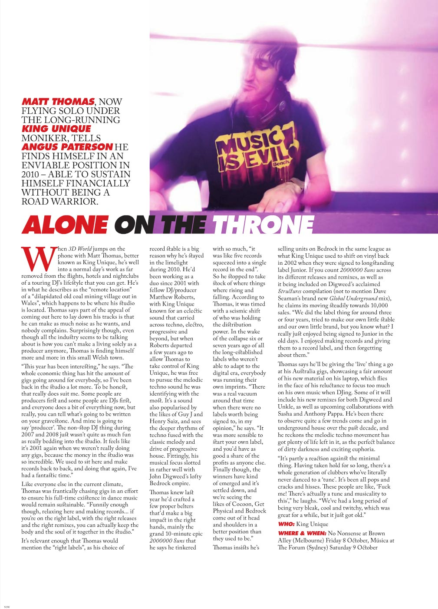

King Unique: Dirty since 2001


After an extended visit to Australia later in 2007, playing a variety of clubs around the country in promotion of their ‘Elektrik’ mix CD for local label EQ, Matthew Roberts of King Unique will return to the land of Oz in late July for a whirlwind east coast tour. Playing three dates, this tour is said to be something of a teaser for a full live extravaganza that the duo has planned for 2008. ITM caught up with Roberts to speak about the duo’s ‘dirty house’ sound.
How has 2007 been rolling along for King Unique so far?
2007 has been pretty good. We had been super busy in the latter half of 2006, touring Australia, USA, South America, Asia and Europe quite heavily, so we started the year by taking a bit of a break whilst we did other thing. We both have been doing this a long time, and try to avoid being always full on with the short-term career stuff. We both have families, kids, and Matt (Thomas) moved house a couple of times. From May onwards we did a couple of remixes, one for Tracey Thorn’s upcoming single ‘Grand Canyon’, which has been building as a big track amongst the DJs who got it – this isn’t released until October – plus a remix for Gabriel and Dresden’s ‘Tracking Treasure Down’, which is also out late summer. We have also been working a lot on our label Curfew, lining up a load of releases, the most recent being Matt Thomas and buddy Steve Mercer’s Merkins’ release.
In your press info you’re being push hard as the kings of “dirty house”, although in Australia this term has come to be associated with cheesy electro. Your production most certainly features a lot of different influences – progressive, tech and minimal, for instance – which is reflected by the wide assortment of DJs that play your music. How do you try and keep your music fresh and unique?
We pretty much invented that name way back in 2001, as we had this big dirty prog track out called ‘Dirty’ by Dirty on Junior Boys Own. At this time there wasn’t any cheesy electro, only lots of tribal and prog. The reality for us is that we have always been into loads of different music. We have a semi-freestyle approach to dance music; life’s too short to have the blinkers on, and we brought all these influences into our productions. We would then get asked what our style was, what we played as DJs, to which we’d reply, “we like and play stuff that is funky, techy, dark, dirty, etc…”, which would read badly. So we just decided to brand it all “Dirty House”, which basically means we can play whatever we like. This has really stuck, for better or worse, and musically we have just carried on evolving and soaking up anything that takes our fancy. Our King Unique Broadcast mix series is replete with examples of unlikely combinations and juxtaposed styles. I think it could be argued that Chemical Brothers also do this; they take influences from all sorts of places, and put it through the Chems machine and spit out bombs on the other end!
What have you got coming up as far as production work goes?
We have done a new single which is just being finalised, which is called ‘Yohkoh’, and have written a couple of other things, plus Matt Thomas has some other collaborations he has been working on with Steve Mercer (Merkins) and with ex-hard house goon turned techno-lord Fergie.
You set up your own record label Curfew last year and straight off the bat you had a big club hit with ‘To The Left’. How are things going with the venture at the moment?
They’re going well, although we didn’t release anything for the first half of 2007. We have got a number of things coming out; Merkins’ ‘I Sleep in Sellotape/Nesk’ is just released, after that we have a sick track, a kind of Switch style production from Auckland’s Magik Johnson called ‘Asylum Sneaker’ in September – this has been getting plays from DJs like Adam Beyer to Nic Fanciulli – then we are swiftly following that with our next single ‘Yohkoh’, followed the remix package with new takes from the wonderful Pitch & Hold and Luke Dzierzek.
On the subject of ‘To The Left’, the Stanton Warriors delivered a really smashing remix of it last year. You guys are quite prominent remixers, but how did it feel to have someone else reworking your own productions for a change?
We were very happy with their mix. It seems to work particularly well when a producer takes your idea and reinvents it in another style, and Dom and Mark’s take kicks ass. It also helps that they are the biggest breaks artist in the universe!
You’ve got a long list of remixes in the can, done for some massive artists like Tracey Thorn, The Killers, Jamiroquai and many more. What would you nominate as the most interesting remix that you’ve worked on?
We did this Baz track ‘Believers’ way back in 2001. The original just wasn’t very good; it just seemed to be this rambling song with no structure or obvious hook. We fiddled about for a couple of hours, isolated 16 bars of the verse, threw the rest away, added some new music and beats and it suddenly sounded really sweet. The whole thing happened in less than a day, an ‘out-of-the-blue’ result that rarely happens.
Which one gave the most satisfying end result, do you think?
It was either that one, or one of the big ones like the ‘Two Months Off’, which we did for Underworld, or our dirty dub of Planet Funk’s ‘The Switch’.
What kind of sounds can we expect to hear on your Australian tour? Would you point to your recent production work as an indicator as far as that goes?
Well, we had been playing quite a lot of techno – this could be termed ‘minimal; or ‘underground’ – last year, but 2007 seems to have brought in a new vibe, more variation. Lots of chunky twisted stuff is big news, everything from Len Faki to Deadmau5. Europe seems to be enjoying a different vibe to the rest of the world. In Europe a real underground sound has been working. But in Australia a more mixed up energetic sound should do nicely. Loads of my mates like Nic Fanciulli, James Zabiela and Paolo Mojo have all been out there recently, and they have filled me in on what’s what. Paolo’s been finishing his sets with our Tracey Thorn remix everywhere, so you will be hearing that one for sure.
King Unique tour the east coast over the coming weeks:
Sat 28 Jul – Sydney, Kink at Arthouse
Fri 3 Aug – Melbourne, 161
Sat 4 Aug – Brisbane, Kink at M.A.S.S